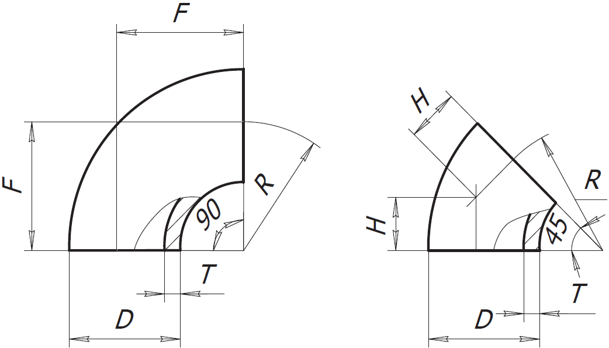

<h3>Площадь поверхности отвода</h3>

<form>
    <label>Диаметр отвода (D), мм:</label>
    <input class="w3-input w3-border" type="number" ng-model="diam" placeholder="диаметр">
    <label>Радиус изгиба (F = R), мм</label>
    <input class="w3-input w3-border" type="number" ng-model="rad" placeholder="радиус">
    <label>Точность вывода результатов (знаки после запятой):</label>
    <input class="w3-input w3-border" type="number" ng-model="tochnost" placeholder="точность">
</form>

<br>

<table class="w3-table w3-bordered w3-striped">
  <tr>
    <td>Площадь отвода 90 град, м2</td>
    <td>{{ Ot_90 }}</td>
  </tr>
  <tr>
    <td>Площадь отвода 45 град, м2</td>
    <td>{{ Ot_45 }}</td>
  </tr>
  <tr>
    <td>Площадь отвода 30 град, м2</td>
    <td>{{ Ot_30 }}</td>
  </tr>
  <tr>
    <td>Площадь отвода 60 град, м2</td>
    <td>{{ Ot_60 }}</td>
  </tr>
</table>
